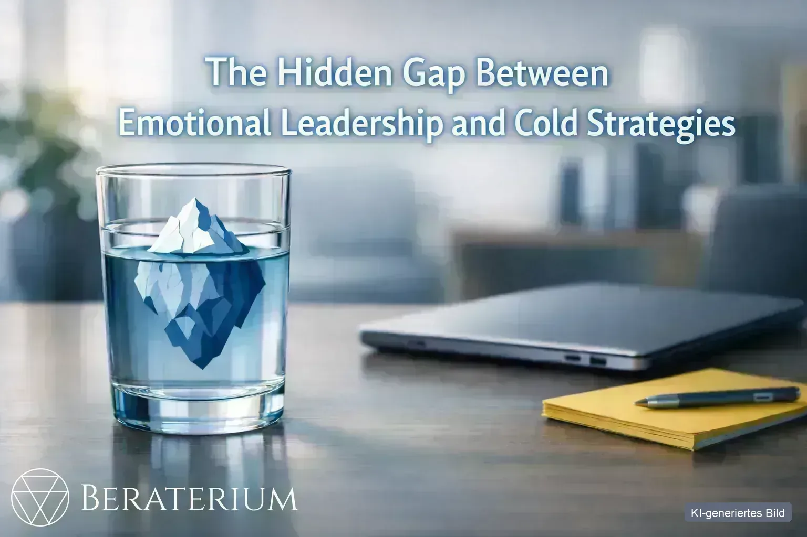
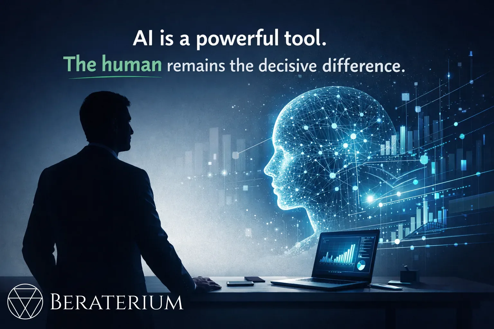
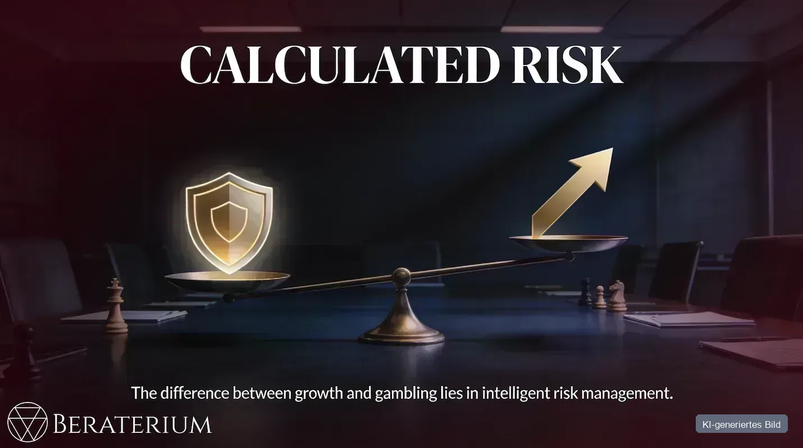
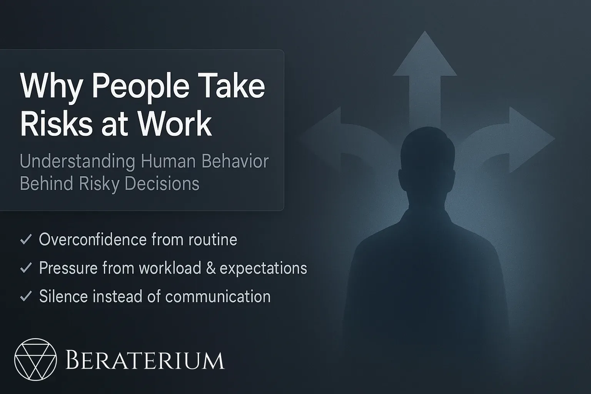
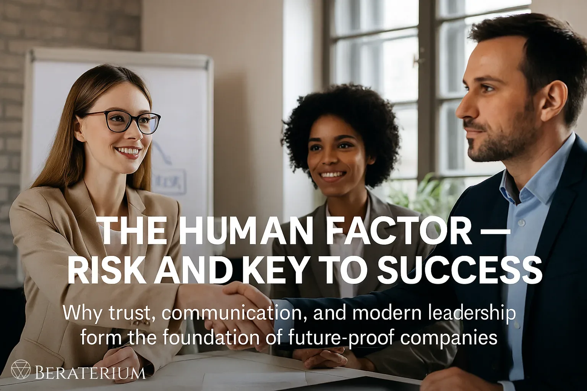
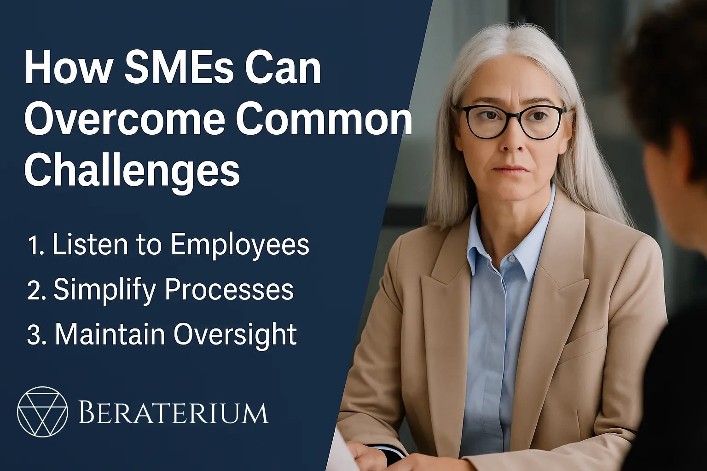
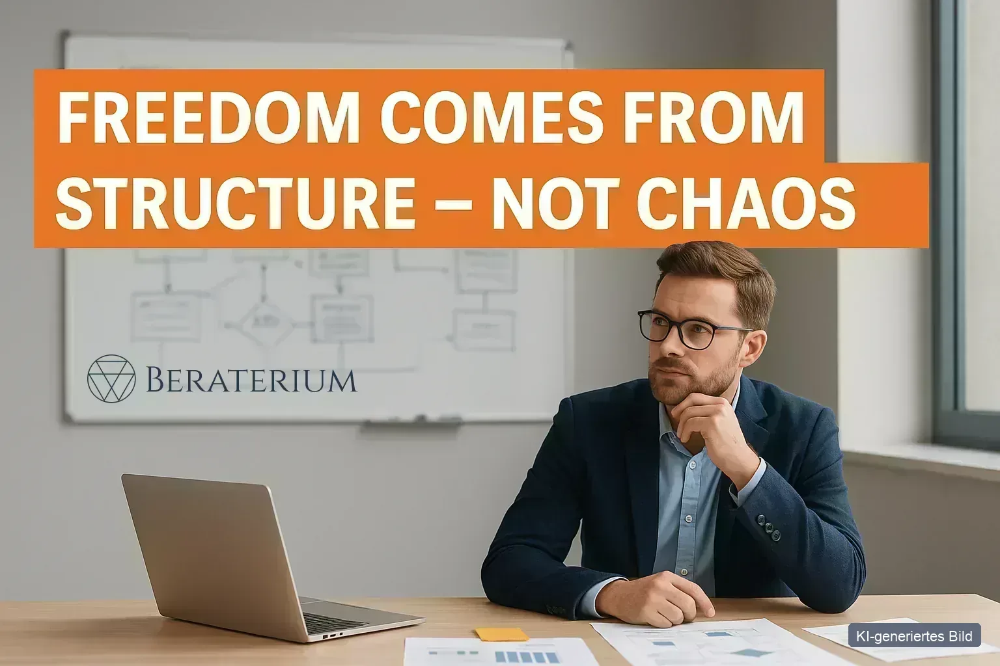
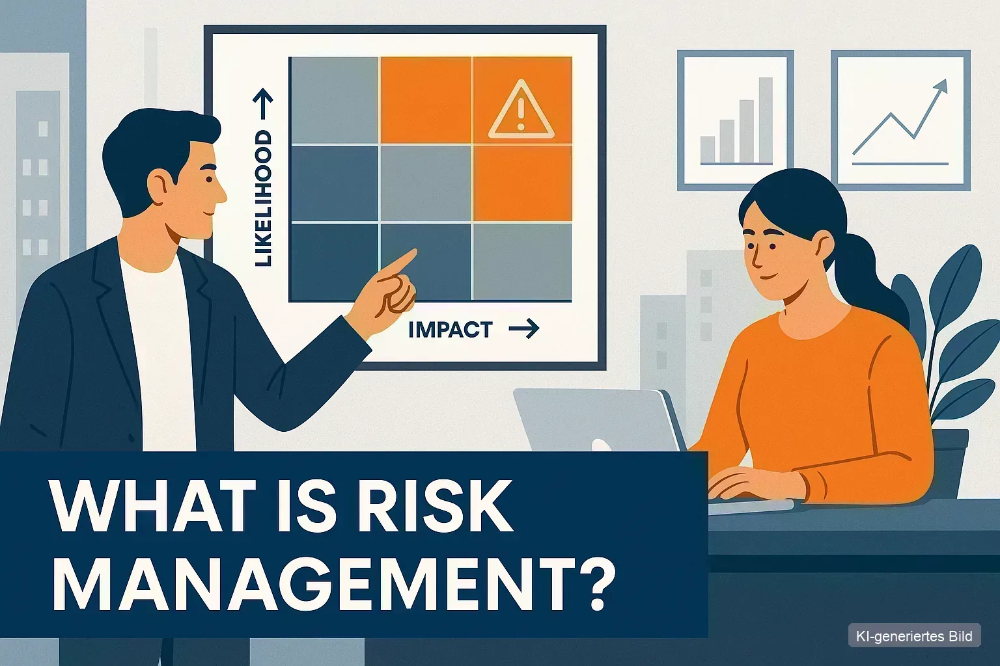
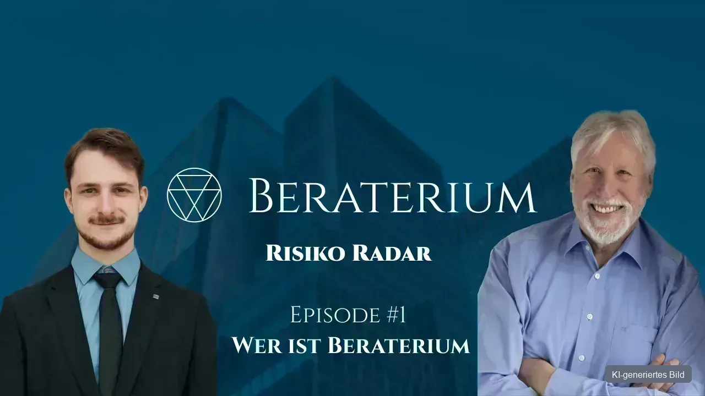

BERATERIUM BLOG
Risk, made understandable
Practical insights on risk management, business risks, HR and leadership – without consultant jargon. For people who want to lead their business safely into the future.
All articles
19 articles on risk management, leadership and business practice.
-

SMEEmotional leadership and the iceberg model: what below the surface drives business risk
The iceberg model in this episode does not mean "bad entrepreneurs", but: visible work often focuses on the small upper part – knowledge, figures,…
Read more → -
 SME
SMEFamily succession and generational conflict: what can go wrong after formal handover
Many conflicts after succession sit not in the shareholders' agreement, but in roles, identity and unclear leadership – a classic risk for the…
Read more → -
 Startup
StartupHealth as business risk: body, team and the small levers
Whoever only looks at processes and technology often overlooks the biggest operational risk: people who are absent or exhausted.
Read more → -
 Startup
StartupInternational expansion done strategically: risks, location choice and clear decisions
Setting up abroad is not a tax trick, but a strategic business decision.
Read more → -
 Risk management
Risk managementIran crisis and the Strait of Hormuz: why "doesn't affect me" is the costliest lie for entrepreneurs
The Strait of Hormuz is blocked – and with it 20–30 per cent of global oil and gas transport. This is not a drill; it is happening now.
Read more → -
 Startup
StartupCommunity Risk Radar: why risks are not solved alone – and what our closed expert club does differently
Finding risks is one thing – solving them is another. Effective measures need more than a single consultant: they need cross-disciplinary…
Read more → -
 HR & culture
HR & cultureEmployee awareness and a risk-conscious culture: more than certificates on the wall
Certificates are not enough: open error culture, risk-driven training, and "safety in dialogue" – how to get employee risk awareness right for…
Read more → -
 Risk management
Risk managementIntellectual property and patent protection: what you can protect – and what you cannot
Patents and trade marks apply only where you register them. Whoever protects only in Germany or the EU can be "taken over" in China or the USA by…
Read more → -

HR & cultureAI and risk management: why people remain the decisive factor
AI is a powerful tool – but risks arise where humans and AI are not thought through together. How to handle AI risks and stay in control.
Read more → -
KMU
Security in business: when people become the biggest risk
Prioritise by criticality, not value: the 120-tonne stainless steel stock can sit in the open – but the €5,000 specialist tools with a three-week…
Read more → -

StartupWhy entrepreneurs must take calculated risks – and how to do it right
Growth without risk is impossible – yet 80% of German startups fail within three years because they did not understand risk, not because they took it.
Read more → -
 HR & Kultur
HR & KulturTake control of your risks before they control you
Risk is not a monster but a constant companion of your entrepreneurship – and that is precisely where its strategic power lies when you make it…
Read more → -
 Risk management
Risk managementExternal risk factors for SMEs: 8 influences that threaten your business
External risk factors threaten your SME more than ever. Energy prices, tax burden, regulation and skills shortages – practical strategies to…
Read more → -

KMUThe real reasons for risky behaviour in companies – what SMEs need to know to avoid failures
Why do employees make risky decisions – even when they know the possible consequences? In many small and mid-sized companies the biggest risks…
Read more → -

HR & culturePeople as risk and key to success
This article shows why people in the business are simultaneously the biggest risk and the most important resource. Technology, processes and rules…
Read more → -

KMUMid-market between routine and risk – why focus and communication decide future viability
The mid-market is seen as the backbone of the economy – yet many companies stumble between routine and risk. Instead of acting strategically,…
Read more → -

StartupStartups between breakthrough and overload – why structure is not the opposite of growth
Most startups do not fail because of bad ideas – they fail because of missing structure. Unclear roles, micromanagement and poor cash flow slow…
Read more → -

HR & KulturWhat is risk management?
Risk management is more than avoiding losses – it is the art of identifying uncertainty, assessing it and taking control of it. This article…
Read more → -

HR & KulturRisk Radar Episode 1 – Who is Beraterium?
In the first episode of the **"Risk Radar"** podcast, **Till Blania** and **Peter Münstermann** present the idea behind **Beraterium**: risk…
Read more →
Don't miss risk insights
One concise update per month – practical, free, unsubscribe any time.